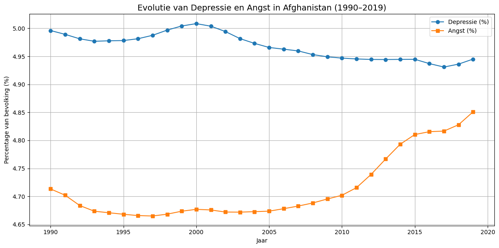

Het verhaal#
import pandas as pd
import matplotlib.pyplot as plt
import plotly.express as px
import plotly.io as pio
from IPython.display import HTML
w_h = pd.read_csv('../datasets/world_happiness_2015.csv', sep=';')
w_h.head(5)
| Ranking | Country | Regional indicator | Happiness score | GDP per capita | Social support | Healthy life expectancy | Freedom to make life choices | Generosity | Perceptions of corruption | |
|---|---|---|---|---|---|---|---|---|---|---|
| 0 | 1 | Switzerland | Western Europe | 7,59 | 8,26 | 0,96 | 73 | 0,99 | 0,37 | 0,24 |
| 1 | 2 | Iceland | Western Europe | 7,56 | 7,7 | 1 | 73 | 0,94 | 0,55 | 0,74 |
| 2 | 3 | Denmark | Western Europe | 7,53 | 7,84 | 0,97 | 70 | 0,97 | 0,43 | 0,12 |
| 3 | 4 | Norway | Western Europe | 7,52 | 8,63 | 0,95 | 71 | 1 | 0,44 | 0,34 |
| 4 | 5 | Canada | North America and ANZ | 7,43 | 7,85 | 0,94 | 71 | 0,95 | 0,58 | 0,4 |
def clean_number(x):
if isinstance(x, str):
x = x.replace('.', '')
x = x.replace(',', '.')
return x
w_h['Happiness score'] = w_h['Happiness score'].apply(clean_number).astype(float)
w_h['Social support'] = w_h['Social support'].apply(clean_number).astype(float)
w_h['Healthy life expectancy'] = w_h['Healthy life expectancy'].apply(clean_number).astype(float)
w_h['Freedom to make life choices'] = w_h['Freedom to make life choices'].apply(clean_number).astype(float)
mean_happiness = w_h['Happiness score'].mean()
mean_social_support = w_h['Social support'].mean()
std_social_support = w_h['Social support'].std()
mean_healthy_life = w_h['Healthy life expectancy'].mean()
mean_freedom = w_h['Freedom to make life choices'].mean()
print(f"Gemiddelde Happiness score: {mean_happiness:.2f}")
print(f"Gemiddelde Social support: {mean_social_support:.2f} (std: {std_social_support:.2f})")
print(f"Gemiddelde Healthy life expectancy: {mean_healthy_life:.2f} jaar")
print(f"Gemiddelde Freedom to make life choices: {mean_freedom:.2f}")
Gemiddelde Happiness score: 5.38
Gemiddelde Social support: 0.71 (std: 0.19)
Gemiddelde Healthy life expectancy: 61.50 jaar
Gemiddelde Freedom to make life choices: 0.64
gemiddelde = w_h['Social support'].mean()
standaarddeviatie = w_h['Social support'].std()
print(f"Gemiddelde Social support: {gemiddelde:.2f}")
print(f"Standaarddeviatie Social support: {standaarddeviatie:.2f}")
Gemiddelde Social support: 0.71
Standaarddeviatie Social support: 0.19
df = pd.read_csv('../datasets/mental-illnesses-prevalence.csv')
df.head(5)
| Entity | Code | Year | Schizophrenia disorders (share of population) - Sex: Both - Age: Age-standardized | Depressive disorders (share of population) - Sex: Both - Age: Age-standardized | Anxiety disorders (share of population) - Sex: Both - Age: Age-standardized | Bipolar disorders (share of population) - Sex: Both - Age: Age-standardized | Eating disorders (share of population) - Sex: Both - Age: Age-standardized | |
|---|---|---|---|---|---|---|---|---|
| 0 | Afghanistan | AFG | 1990 | 0.223206 | 4.996118 | 4.713314 | 0.703023 | 0.127700 |
| 1 | Afghanistan | AFG | 1991 | 0.222454 | 4.989290 | 4.702100 | 0.702069 | 0.123256 |
| 2 | Afghanistan | AFG | 1992 | 0.221751 | 4.981346 | 4.683743 | 0.700792 | 0.118844 |
| 3 | Afghanistan | AFG | 1993 | 0.220987 | 4.976958 | 4.673549 | 0.700087 | 0.115089 |
| 4 | Afghanistan | AFG | 1994 | 0.220183 | 4.977782 | 4.670810 | 0.699898 | 0.111815 |
depression_col = 'Depressive disorders (share of population) - Sex: Both - Age: Age-standardized'
anxiety_col = 'Anxiety disorders (share of population) - Sex: Both - Age: Age-standardized'
depression_min = df[depression_col].min()
depression_max = df[depression_col].max()
anxiety_min = df[anxiety_col].min()
anxiety_max = df[anxiety_col].max()
print(f"Depressive disorders range: {depression_min:.2f}% – {depression_max:.2f}%")
print(f"Anxiety disorders range: {anxiety_min:.2f}% – {anxiety_max:.2f}%")
print(f"Gemiddelde depressie: {df[depression_col].mean():.2f}%")
print(f"Gemiddelde angst: {df[anxiety_col].mean():.2f}%")
Depressive disorders range: 1.52% – 7.65%
Anxiety disorders range: 1.88% – 8.62%
Gemiddelde depressie: 3.77%
Gemiddelde angst: 4.10%
Lijndiagram#
Dit lijndiagram toont de evolutie van de geluksindex in landen van 2015. Dit helpt bij het begrijpen van algemene trends.
w_h_sorted = w_h.sort_values('Happiness score', ascending=False)
top_landen = w_h_sorted.head(30)
plt.figure(figsize=(14, 6))
plt.plot(top_landen['Country'], top_landen['Happiness score'], marker='o', linestyle='-', color='dodgerblue')
plt.title('Happiness score per land (2015)', fontsize=14)
plt.xlabel('Land')
plt.ylabel('Happiness score')
plt.xticks(rotation=45, ha='right')
plt.grid(True)
plt.tight_layout()
plt.show()

Wereldkaart#
De landen zijn gekleurd volgens hun gemiddelde geluksindex. Dit toont de wereldwijde verdeling van geluk.
def categoriseer(score):
if score < 4:
return 'Zeer laag (0–4)'
elif score < 6:
return 'Laag (4–6)'
elif score < 7.5:
return 'Gemiddeld (6–7.5)'
else:
return 'Hoog (7.5–10)'
w_h['Score Category'] = w_h['Happiness score'].apply(categoriseer)
kleurenschema = {
'Zeer laag (0–4)': 'darkred',
'Laag (4–6)': 'orange',
'Gemiddeld (6–7.5)': 'lightgreen',
'Hoog (7.5–10)': 'green'
}
fig = px.choropleth(
w_h,
locations='Country',
locationmode='country names',
color='Score Category',
hover_name='Country',
color_discrete_map=kleurenschema,
title='\U0001F30D Wereldkaart: Categorisatie van Happiness score (2015)'
)
fig.update_layout(
title_font=dict(size=20),
geo=dict(
showframe=False,
showcoastlines=True,
projection_type='equirectangular',
landcolor='lightgray'
),
margin=dict(l=0, r=0, t=40, b=0)
)
HTML(pio.to_html(fig, include_plotlyjs='cdn'))
Tijdlijn van psychische stoornissen#
Deze tijdlijn toont de evolutie van depressie- en angstpercentages tussen 1990 en 2019.
land = 'Afghanistan'
df_land = df[df['Entity'] == land]
depressie_col = 'Depressive disorders (share of population) - Sex: Both - Age: Age-standardized'
angst_col = 'Anxiety disorders (share of population) - Sex: Both - Age: Age-standardized'
plt.figure(figsize=(12, 6))
plt.plot(df_land['Year'], df_land[depressie_col], label='Depressie (%)', marker='o')
plt.plot(df_land['Year'], df_land[angst_col], label='Angst (%)', marker='s')
plt.title(f'Evolutie van Depressie en Angst in {land} (1990–2019)', fontsize=14)
plt.xlabel('Jaar')
plt.ylabel('Percentage van bevolking (%)')
plt.grid(True)
plt.legend()
plt.tight_layout()
plt.show()

Correlatiediagram#
In dit correlatiediagram worden de percentages van depressie en angst in elk land aan elkaar verbonden.
df_2019 = df[df['Year'] == 2019]
depressie_col = 'Depressive disorders (share of population) - Sex: Both - Age: Age-standardized'
angst_col = 'Anxiety disorders (share of population) - Sex: Both - Age: Age-standardized'
fig = px.scatter(
df_2019,
x=depressie_col,
y=angst_col,
hover_name='Entity', # tooltip bij muis
color=depressie_col, # kleur tonen op basis van depressie
color_continuous_scale='Bluered',
size_max=12,
labels={
depressie_col: 'Depressie (%)',
angst_col: 'Angst (%)'
},
title='\U0001F517 Correlatie tussen depressie en angst per land (2019)',
trendline='ols' # trendlijn toevoegen
)
fig.update_layout(
plot_bgcolor='white',
title_font=dict(size=20),
xaxis=dict(showgrid=True, gridcolor='lightgrey'),
yaxis=dict(showgrid=True, gridcolor='lightgrey'),
margin=dict(l=40, r=20, t=60, b=40)
)
HTML(pio.to_html(fig, include_plotlyjs='cdn'))
Spreidingsdiagram#
Dit spreidingsdiagram verbindt geluk en depressie.
df_2019 = df[df['Year'] == 2019]
depressie_col = 'Depressive disorders (share of population) - Sex: Both - Age: Age-standardized'
depressie_klein = df_2019[['Entity', depressie_col]].rename(
columns={'Entity': 'Country', depressie_col: 'Depressie (%)'}
)
# w_h['Happiness score'] = w_h['Happiness score'].str.replace(',', '.').astype(float)
data = pd.merge(w_h[['Country', 'Happiness score']], depressie_klein, on='Country')
fig = px.scatter(
data,
x='Happiness score',
y='Depressie (%)',
hover_name='Country',
title='\U0001F9E0 Spreidingsdiagram: Geluk vs. Depressie per land (2019)',
labels={
'Happiness score': 'Geluksindex',
'Depressie (%)': 'Depressie (%)'
},
trendline='ols',
opacity=0.7
)
fig.update_traces(marker=dict(size=8, color='darkcyan'))
fig.update_layout(
title_font=dict(size=20),
plot_bgcolor='white',
xaxis=dict(showgrid=True, gridcolor='lightgrey'),
yaxis=dict(showgrid=True, gridcolor='lightgrey'),
margin=dict(l=20, r=20, t=60, b=40)
)
HTML(pio.to_html(fig, include_plotlyjs='cdn'))
Staafdiagram#
Dit toont de mate van maatschappelijke steun in de 15 gelukkigste landen.
if w_h['Happiness score'].dtype == object:
w_h['Happiness score'] = w_h['Happiness score'].str.replace(',', '.').astype(float)
if w_h['Social support'].dtype == object:
w_h['Social support'] = w_h['Social support'].str.replace(',', '.').astype(float)
top15 = w_h.sort_values('Happiness score', ascending=False).head(15)
top15_sorted = top15.sort_values('Social support')
plt.figure(figsize=(11, 7))
plt.scatter(top15_sorted['Social support'], top15_sorted['Country'], color='darkorange', s=100)
for i, row in top15_sorted.iterrows():
plt.plot([0, row['Social support']], [row['Country'], row['Country']], color='lightgray', lw=1)
for i, row in top15_sorted.iterrows():
x = float(row['Social support'])
y = row['Country']
label = f"{x:.2f}"
plt.text(x + 0.02, y, label, va='center', fontsize=9)
plt.xlabel('Social support')
plt.title('Maatschappelijke steun in de 15 gelukkigste landen (2015)', fontsize=14)
plt.grid(axis='x', linestyle='--', alpha=0.5)
plt.tight_layout()
HTML(pio.to_html(fig, include_plotlyjs='cdn'))
def clean_number(x):
if isinstance(x, str):
x = x.replace(',', '.')
return x
w_h['Happiness score'] = w_h['Happiness score'].apply(clean_number).astype(float)
depression_col = 'Depressive disorders (share of population) - Sex: Both - Age: Age-standardized'
anxiety_col = 'Anxiety disorders (share of population) - Sex: Both - Age: Age-standardized'
df_2015 = df[df['Year'] == 2015]
top5_geluk = w_h.nlargest(5, 'Happiness score')[['Country', 'Happiness score']].rename(columns={'Happiness score': 'Value'})
top5_geluk['Categorie'] = 'Geluksniveau'
top5_depressie = df_2015.nlargest(5, depression_col)[['Entity', depression_col]].rename(columns={depression_col: 'Value', 'Entity': 'Country'})
top5_depressie['Categorie'] = 'Depressie'
top5_angst = df_2015.nlargest(5, anxiety_col)[['Entity', anxiety_col]].rename(columns={anxiety_col: 'Value', 'Entity': 'Country'})
top5_angst['Categorie'] = 'Angst'
alle_landen = pd.concat([
top5_geluk[['Country']],
top5_depressie[['Country']],
top5_angst[['Country']]
]).drop_duplicates()
landen_lijst = alle_landen['Country'].tolist()
relevante_geluk = w_h[w_h['Country'].isin(landen_lijst)][['Country', 'Happiness score']].rename(columns={'Happiness score': 'Value'})
relevante_geluk['Categorie'] = 'Geluksniveau'
relevante_depressie = df_2015[df_2015['Entity'].isin(landen_lijst)][['Entity', depression_col]].rename(columns={depression_col: 'Value', 'Entity': 'Country'})
relevante_depressie['Categorie'] = 'Depressie'
relevante_angst = df_2015[df_2015['Entity'].isin(landen_lijst)][['Entity', anxiety_col]].rename(columns={anxiety_col: 'Value', 'Entity': 'Country'})
relevante_angst['Categorie'] = 'Angst'
df_alle = pd.concat([relevante_geluk, relevante_depressie, relevante_angst])
fig = px.bar(
df_alle,
x='Country',
y='Value',
color='Categorie',
barmode='group',
title='Top 5 landen in 2015: Geluksniveau, Depressie en Angst',
labels={'Value': 'Waarde', 'Country': 'Land'}
)
HTML(pio.to_html(fig, include_plotlyjs='cdn'))
df = pd.read_csv('../datasets/mental-illnesses-prevalence.csv')
print(df.shape[0])
print(df.shape[1])
6420
8
w_h = pd.read_csv('../datasets/world_happiness_2015.csv', sep=';')
print(w_h.shape[0])
print(w_h.shape[1])
158
10